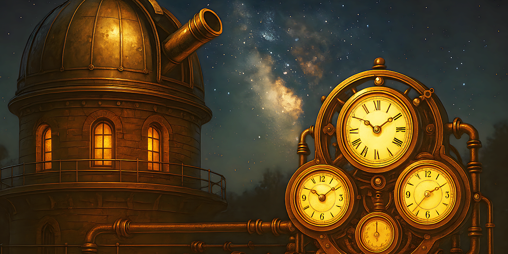

Generate Your Stardate
Current Stardate
1748.5
Setup
Reference Table
| Stardate | Meaning | Example Use |
|---|---|---|
| 1748.0 | Midnight, story begins | Opening log entry |
| 1748.5 | Noon, central scene | Main event |
| 1748.3 | Next day, morning | Progression |
Understanding the Time-of-Day Dial (0–9)
The Chronometric Guild divides each day into ten equal segments instead of using hours.
This keeps Stardates compact, elegant, and easy to track across your narrative.
Each digit from 0–9 represents a distinct phase of the day:
| Decimal | Time of Day | Meaning |
|---|---|---|
| 0 | Midnight | Start of the new Stardate |
| 1 | Early Morning | Pre-dawn, lamps still lit |
| 2 | Morning | Sunrise and early activity |
| 3 | Late Morning | Workday fully underway |
| 4 | Midday Approaching | Late-morning bustle |
| 5 | Noon | High sun; common log entry time |
| 6 | Afternoon | Shops and workshops in full clatter |
| 7 | Late Afternoon | Lengthening shadows |
| 8 | Evening | Lamps lit; day winds down |
| 9 | Late Evening | Quiet hours before the next Stardate |
Quick Rule of Thumb
- Dark scenes → choose 0 or 9
- Daylight scenes → choose 2–7
- Noon or pivotal moments → choose 5
- Transitions between day parts → pick the number between them
Example Interpretations
- 1748.0 — Midnight at the beginning of Day 1748
- 1748.5 — Noon on Day 1748
- 1749.8 — Evening of the next day
- 1750.3 — Late morning, two days later
Why this system?
The Guild’s decimal-day model mirrors a thermometer:
simple to read, impossible to misuse, and perfect for fast-paced storytelling.